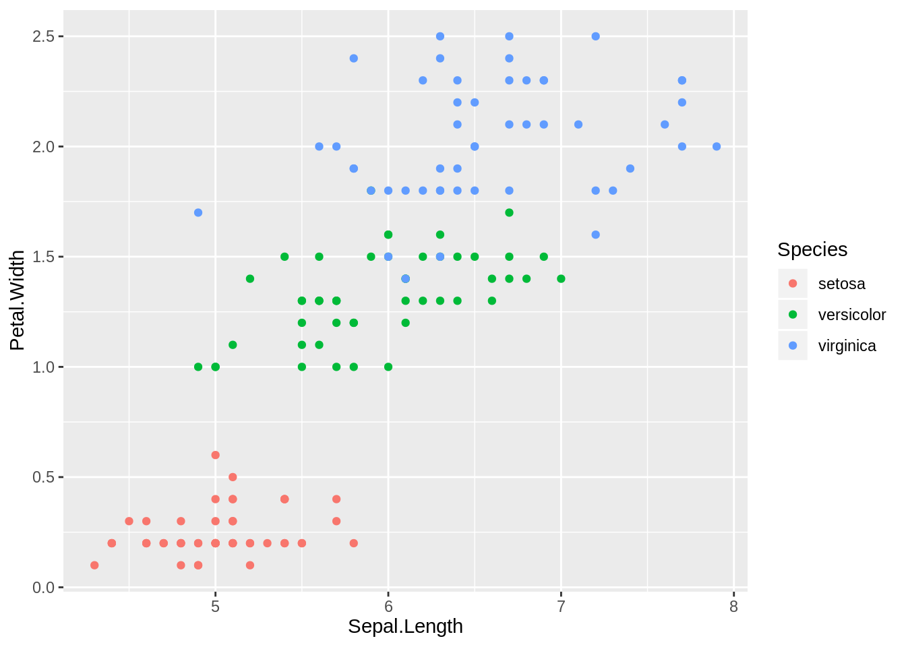

如何將此 Rmd 輸出成 PDF?
依序執行下方指令：
rmarkdown::render("index.Rmd")
pagedown::chrome_print("index.html")1 簡介
請簡要說明你們的專案
2 方法
請在這裡寫下方法。請在這裡寫下方法。請在這裡寫下方法。請在這裡寫下方法。請在這裡寫下方法。
2.1 資料取得
2.2 原始碼運作說明
3 結果
請在這裡寫下結果。請在這裡寫下結果。請在這裡寫下結果。請在這裡寫下結果。請在這裡寫下結果。請在這裡寫下結果。

Figure 3.1: iris 的散布圖
4 討論與貢獻
請在這裡寫下討論。請在這裡寫下討論。請在這裡寫下討論。請在這裡寫下討論。